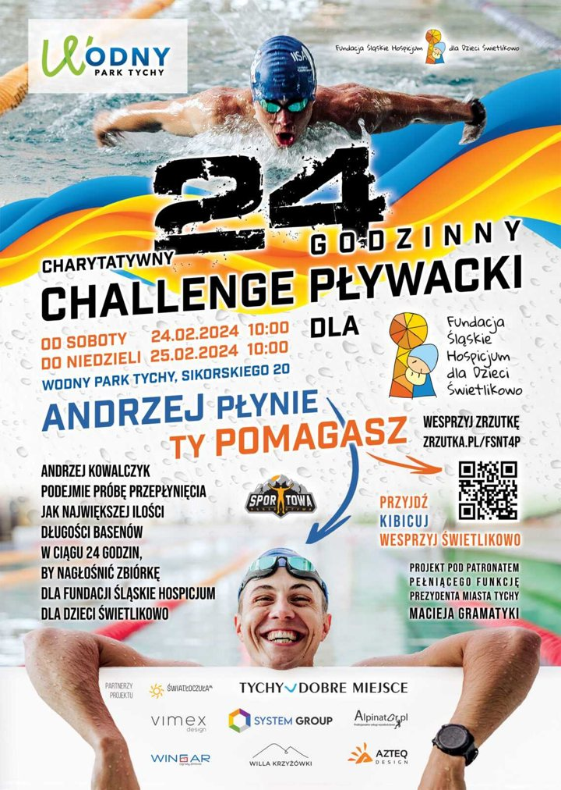
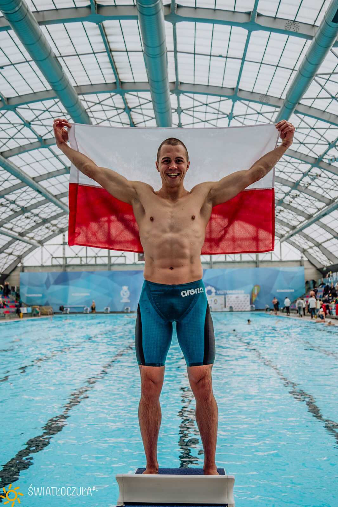

zrzutka.pl, 24–25.02.2024
10 000 zł+
Fundacja Śląskie Hospicjum dla Dzieci Świetlikowo
Zebrane w trakcie doby w basenie.

2019–2024, Lędziny, Kazimierza Wielka, Tychy
Od 12-godzinnej Otyliady po dobę w basenie dla dzieci ze Świetlikowa. W 2024 roku przepłynąłem 2046 długości, czyli 51,15 km.
2046długości

Pływać zacząłem w IV klasie szkoły podstawowej. W 2005 roku zdobyłem stopień młodszego ratownika wodnego, a od 2019 roku jestem licencjonowanym instruktorem pływania.
W 2019 roku wygrałem 12-godzinną Otyliadę w Lędzinach, przepływając 30,5 km. Rok później wygrałem 24-godzinny maraton pływacki w Kazimierzy Wielkiej: 1724 długości, 43,1 km i rekord najstarszego takiego maratonu w Polsce.
24–25 lutego 2024 roku w Wodnym Parku Tychy przepłynąłem 2046 długości 25-metrowego basenu, o ponad 8 km więcej niż kiedykolwiek wcześniej. To ponad 41 tysięcy ruchów rąk, 16 tysięcy wdechów i 1000 nawrotów.
Pływałem dla Fundacji Śląskie Hospicjum dla Dzieci Świetlikowo.

zrzutka.pl, 24–25.02.2024
10 000 zł+
Fundacja Śląskie Hospicjum dla Dzieci Świetlikowo
Zebrane w trakcie doby w basenie.
Kontakt
Prelekcja, szkolenie, sponsoring, wywiad albo dobre słowo przed startem.